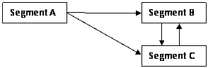
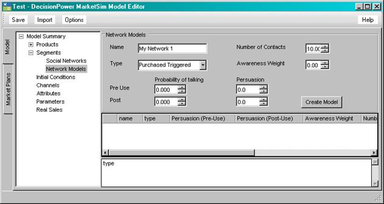

MarketSim Social Network Table of Contents
MarketSim allows agents to become sources of awareness and persuasion. A random network among the agents is created that will pass on awareness and persuasion with regard to a certain products.
There are two steps to creating the social network. The first is to create a network model for the connection between two segments. The second step is to connect to segments with a network model.
Different social network models can be created and each can be used to create a one way network between any two segments. As many networks as desired can be created between any two segments going in either direction. Or if desired a network can be created from one segment to all other segments.

Each arrow in the above diagram represents a social network connection.
Segment A talks to Segment B and C. Segment A is not talked to by any other segment.
Segment B talks only to Segment C. Segment B is only talked to by Segment A.
Segment C on talks to Segment B. Segment C is talked to by Segment A and B.
1. In the model editor with the Model tab selected click on the Options button.
2. Make sure that the Enable social network box is checked.
3. In the model tree two options are available under segments, Social Network and Networks Models. Select Network Models.
4. Create or edit an existing network model. Values in the grid may be edited directly, or an existing network model can be deleted.
5. Once the desired network model is created, select Social Network in model tree.
6. Select the segment that will be Talking and the segment that will be Listening and also the network model to use.
Note that deleting a network model will also remove any connections that depend on the model.
You are also able to change the network model between two segments when editing the social network. You can also delete the connection between two segments by deleting the row from the grid.
To create a connection between from one segment to another a network model must first be created. The network model dictates when an agent talks, and the amount of awareness and persuasion that will be imparted.

Any name can be given to the network model. This name is used as a reference when creating connections between segments.
Agents can talk whenever they receive persuasion or make a purchase or they can talk only when the make a purchase.
While this can be set to any positive value in the interface, the current simulation engine limits this to a maximum of 100 contacts. In addition this number is also limited to 10% of the possible pool of agents.
The actual number of contacts per agent is random and is determined by an exponential distribution with mean equal to the number of contacts.
This is the probability of an agent talking that day. Once an agent decides talk he will talk to all contacts.
Agents a treated like any media source and have an awareness weight associated with the network.
Similar to awareness agents will also be given a persuasion level. Note that both awareness and persuasion varies by network and not by agent.
Agents will only talk if they receive persuasion or purchase a product. This is computed on a day by day basis.
Agents will talk about the last product purchased, in addition, they will talk about the product with the most negative persuasion and the product with the maximum positive persuasion.